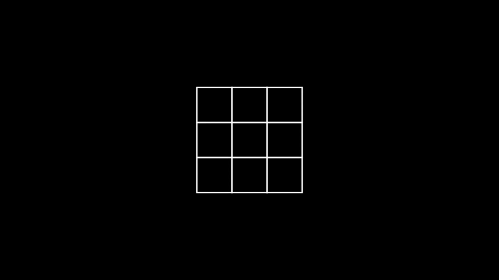
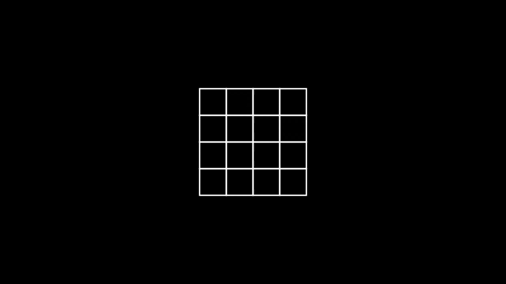

n^2 배열 자르기
문제 설명
정수 n, left, right가 주어집니다. 다음 과정을 거쳐서 1차원 배열을 만들고자 합니다.
- n행 n열 크기의 비어있는 2차원 배열을 만듭니다.
- i = 1, 2, 3, ..., n에 대해서, 다음 과정을 반복합니다.
- 1행 1열부터 i행 i열까지의 영역 내의 모든 빈 칸을 숫자 i로 채웁니다.
- 1행, 2행, ..., n행을 잘라내어 모두 이어붙인 새로운 1차원 배열을 만듭니다.
- 새로운 1차원 배열을 arr이라 할 때, arr[left], arr[left+1], ..., arr[right]만 남기고 나머지는 지웁니다.
정수 n, left, right가 매개변수로 주어집니다. 주어진 과정대로 만들어진 1차원 배열을 return 하도록 solution 함수를 완성해주세요.
제한사항
- 1 ≤ n ≤ 107
- 0 ≤ left ≤ right < n2
- right - left < 105
입출력 예
| n |
left |
right |
result |
| 3 |
2 |
5 |
[3,2,2,3] |
| 4 |
7 |
14 |
[4,3,3,3,4,4,4,4] |
입출력 예 설명
입출력 예 #1
- 다음 애니메이션은 주어진 과정대로 1차원 배열을 만드는 과정을 나타낸 것입니다.

입출력 예 #2
- 다음 애니메이션은 주어진 과정대로 1차원 배열을 만드는 과정을 나타낸 것입니다.
